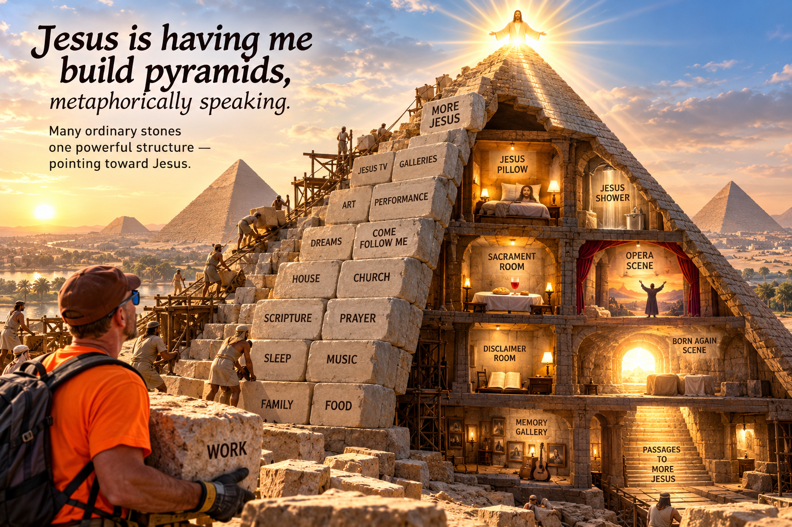

Jesus Is Having Me Build Pyramids, Metaphorically Speaking
Patterns in the Stones
I think there is a strong family resemblance between what my friend Andy is doing with the Great Pyramid and what I am doing in My Jesus-Greg WORLD. We are both fascinated by patterns—but perhaps by somewhat different kinds of patterns.
Andy appears fascinated by patterns that might already be embedded in the stones. He looks at the arōura, π, 365.25, the Pyramid Inch, architectural measurements, biblical numbers, and historical dates and asks: Could these apparently separate things actually be manifestations of one underlying design? His excitement comes when stones that appear unrelated suddenly seem to fit together. His movement is essentially: discover → correlate → infer hidden architecture.
I am doing something similar, except Jesus is having me build the architecture—or at least that is my working hypothesis.
Chambers, Compartments, Passages
A pyramid has chambers, compartments, passages, entrances, measurements, orientations, stones stacked upon stones. So does My Jesus-Greg WORLD. I take things that ordinarily occupy separate compartments—scripture, classic-rock songs, household rooms, work, prayer, church buildings, meals, dreams, Come Follow Me, performance, memory techniques—and deliberately open passages between them. A song connects to a scripture. A scripture connects to a room. A room connects to an activity. An activity connects to Jesus. Slowly, separate chambers become one structure.
I am stacking stones.
So Andy might ask, “What if God embedded a pattern in this pyramid?” I am asking, “What happens if Jesus and I build a pyramid of patterns out of my ordinary life?”
My Egyptian Sacred Best Guess
And that question gives me a new way of imagining the Egyptians themselves.
Here is my Egyptian sacred best guess. I don't know that this is what happened historically. I am imagining what might happen if people thousands of years ago approached a gigantic sacred building project with something like the impulse I recognize in myself:
“Let's act like heaven can be breached. Let's build something that helps us breach it.”
Not breach heaven as conquest. Reach toward it. Build toward it. Orient ourselves toward it. Create something on earth that points relentlessly upward.
Maybe a pyramid.
There is something almost perfect about that shape for the metaphor. Start with an enormous footprint in the ordinary world. Gather thousands upon thousands of separate stones. Then arrange them so that everything gradually converges toward a single point in the heavens.
That sounds a lot like what I am trying to do.
My life has a very broad base: food, sleep, work, music, scripture, church, friends, family, house, yard, computer, shower, bed, bread, television. Thousands of ordinary stones.
The experiment is to ask whether all those stones can begin pointing in the same direction.
MORE Jesus.
Building the Pyramid Builds the Builders
And then something fascinating happens: building the pyramid becomes as important as the finished pyramid.
Imagine beginning a sacred project you don't entirely know how to accomplish. How do we move these stones? How do we orient this thing? How do we measure it? How do we organize the work? How do we make the angles converge? How do we make one generation's work intelligible to another?
We don't know.
So we prototype.
We measure. We fail. We adjust. We refine. We discover. We build another course. We notice patterns. We invent tools. We develop language. We organize ourselves differently. And perhaps, all along, we call upon God—or the gods, as ancient Egyptians understood them—to help us accomplish something beyond our present capacities.
Course upon course. Stone upon stone. Line upon line.
And perhaps revelation works a little like construction. You don't necessarily receive the whole pyramid first. Maybe you receive enough light to place the next stone.
That possibility fascinates me because then the pyramid isn't merely something humans build for God. The process of building it becomes something that builds the humans.
And that sounds remarkably familiar.
I Don't Have the Entire Blueprint
I don't actually know how to build My Jesus-Greg WORLD. I don't know exactly what Jesus TV becomes. I don't know what the opera becomes. I don't know what happens when I turn my house into galleries, my work into scenes, classic rock into redeemed songs, Come Follow Me into enactment, or ordinary days into rehearsals for heaven.
Good.
I don't have the blueprint for the entire pyramid.
Maybe not knowing is part of the experiment. Maybe I am supposed to attempt something slightly beyond my present ability so that the attempt itself requires me to listen, improvise, prototype, revise, tear down badly placed stones, preserve the ones that surprisingly fit, and repeatedly ask Jesus:
“Okay. Where does the next stone go?”
Wrought Upon
That changes my understanding of “wrought upon.”
Suppose people feel moved upon to undertake something they could not have completely specified beforehand. They begin. They pray. They work. Their hands encounter problems their minds never anticipated. Unexpected possibilities emerge from the construction itself.
Eventually they stand before something they could not have completely imagined when they laid the first stone.
From the believer's perspective, it can be experienced as a God+human creation.
That doesn't prove God caused it. That's an important distinction in my experiment. “I built this,” “something unexpected emerged while I built this,” “I experienced myself as being wrought upon while building this,” and “God directed me to build this” are different claims. My last claim remains a sacred best guess requiring continued testing, prayer, humility, and revision.
But I am increasingly interested in enactment as a way of finding out.
Don't merely sit outside the pyramid developing a theory about it.
Enter it.
Walk the passage.
Open the chamber.
Pick up a stone.
Build.
A Jesus Memory Pyramid
That is why my Jesus Pillow, Jesus Shower, Jesus Bread, Jesus Table, Jesus TV, redeemed songs, galleries, opera scenes, and Groundhog Day structure keep multiplying and connecting. They are becoming chambers and passageways inside a single symbolic structure. The bed isn't merely a bed. A doorway isn't merely a doorway. Work isn't merely work. A song isn't merely a song.
Each can become another stone pointing upward.
This also explains why memory-palace technology has become such a natural metaphor for My Jesus-Greg WORLD. Perhaps I am building a kind of Jesus memory pyramid. Physical places, repeated behaviors, music, images, scripture stories, objects, and ordinary activities become chambers containing reminders. Walk into one chamber and something points toward another. Eventually the structure itself helps me remember what the structure was built for.
Jesus.
What Does Building the Pyramid Do to Greg?
And the experiment has a wonderfully simple test available:
What does building the pyramid do to Greg?
Does repeatedly acting out “Jesus is here” make Jesus more cognitively present during my day? Does associating work gloves with “God's Love in You” cause that thought to return when I put the gloves on? Does deeply enacting one scripture make it more retrievable six months later than simply reading twenty chapters? Does turning my house into galleries cause scripture and Jesus to intrude into ordinary consciousness more frequently?
In other words: after another course of stones has been added, am I different?
Those are empirical questions of a different kind. I don't have to prove that God placed every stone in order to observe what happens as the structure rises.
Maybe this is where the sociologist/scientist, artist, worker, and disciple in me finally meet. I am simultaneously participant, architect, stonecutter, laborer, performer, and observer. My Jesus-Greg WORLD isn't merely my theory about patterns.
It is the pyramid where I test them.
The Structure Builds Us
And now I can imagine—again, as imaginative speculation rather than established Egyptian history—that perhaps some ancient builders discovered something similar.
Maybe they thought they were building a sacred structure that could bring earth and heaven closer together.
And perhaps, somewhere around the thousandth stone, they discovered something unexpected:
the sacred structure they were building was also building them.
That may be the deepest pyramid connection for me.
The MORE Jesus = More Reality Experiment begins with an enormous field of apparently unrelated things. Scripture over here. Music over there. Work somewhere else. Prayer in another chamber. Food in another. Church in another. Dreams somewhere deep inside.
Then I start building passages.
I start stacking stones.
I start noticing alignments.
I start asking whether these separate chambers might belong to one architecture.
And slowly the structure points upward.
Build Toward Heaven
Andy may be asking:
“Is there a divine pattern hidden in the architecture?”
I may be asking:
“What happens when Jesus and I intentionally build my life into an architecture of patterns pointing toward Jesus—and then I live inside it?”
And my playful Egyptian guess adds another possibility:
Maybe some ancient builders were asking something surprisingly similar.
Let's build toward heaven.
Let's attempt something we don't yet know how to do.
Let's ask God for help.
Let's move some stones.
Let's measure.
Let's discover.
Let's refine.
Let's build another course.
Let's see what the work reveals.
Let's see what we become.
And when we don't know where the next stone goes, let's ask heaven.
Maybe that is one reason human beings build pyramids.
And maybe that is why, metaphorically speaking, Jesus has me building one too.